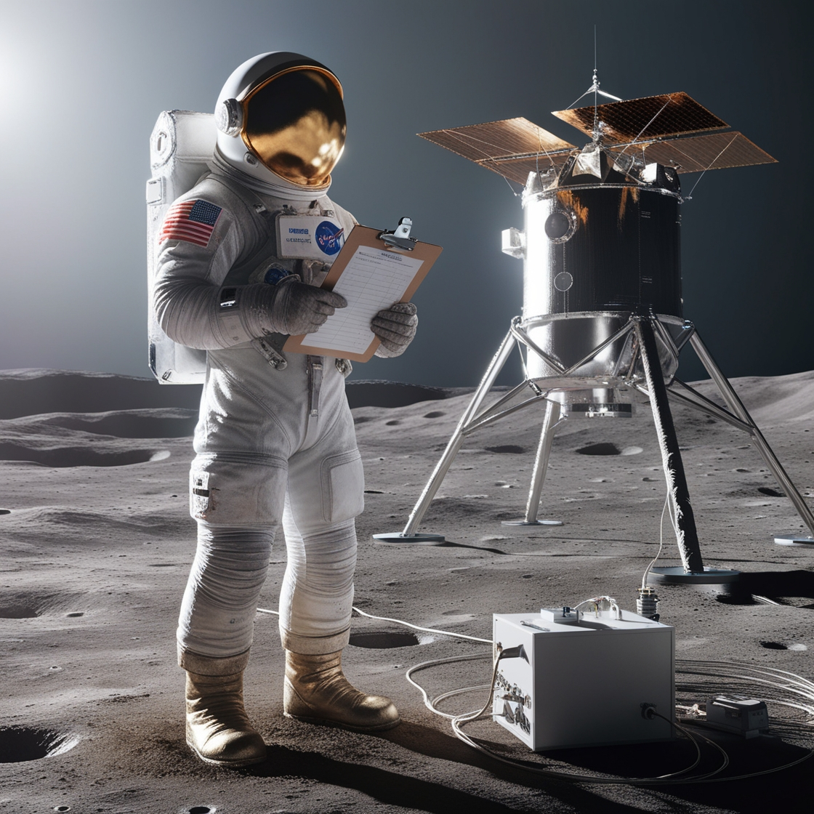
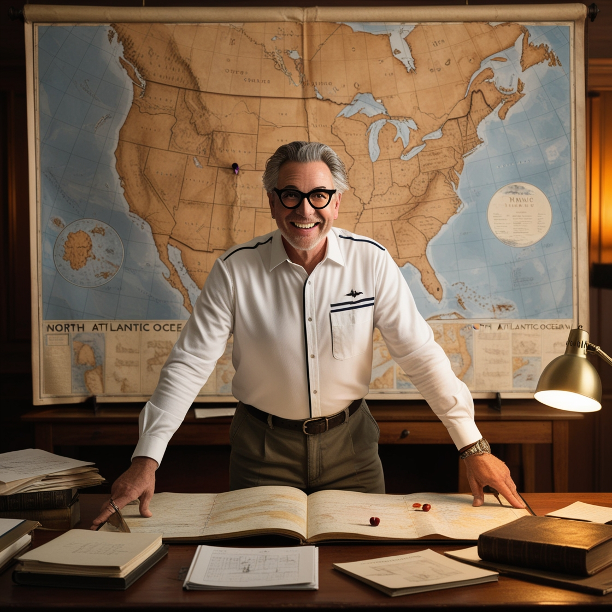

Beyond Horizons
Explora nuevos destinos y vive experiencias inolvidables
Explora nuevos destinos y vive experiencias inolvidables
Nuestra Misión es brindar experiencias de viaje únicas e inolvidables que no solo expandan los límites de la exploración humana, sino que también promuevan un profundo respeto y aprecio por nuestro planeta y el vasto universo que lo rodea. Nuestra misión es inspirar a cada viajero a despertar su espíritu aventurero y a desafiar lo conocido, permitiéndoles vivir aventuras que cambien su perspectiva del mundo y más allá. Todo esto mientras fomentamos la conservación del entorno que exploramos.
Nuestra Visión es un futuro en el que Beyond Horizons sea reconocida globalmente como el líder en turismo extremo y aventuras espaciales. Aspiramos a inspirar a generaciones de exploradores a descubrir lo extraordinario, a través de experiencias que fusionen educación, respeto por la naturaleza y el cosmos, y una pasión insaciable por lo desconocido. Queremos ser la chispa que encienda el deseo de exploración en cada individuo, llevándolos a rincones del universo que solo habían soñado.
En Beyond Horizons, estamos orgullosos de contar con un equipo de expertos apasionados y dedicados que aportan perspectivas únicas a cada una de nuestras aventuras.
🧑🚀 Astronautas y Científicos: Nuestros astronautas y científicos no solo poseen un conocimiento profundo sobre la exploración espacial y las condiciones extremas,
sino que también están comprometidos con la investigación y la innovación continua. Gracias a ellos, nuestros viajes son más seguros y emocionantes.

🗺️ Guías Especializados: Con años de experiencia en entornos desafiantes como la Antártida y en expediciones submarinas, nuestros guías son maestros en asegurar que cada viaje sea tan educativo como emocionante.
Ofrecen una visión auténtica y profunda de cada destino, haciendo de cada aventura una experiencia única.

🦺 Personal de Seguridad y Salud: Este equipo está dedicado a garantizar que cada expedición se realice bajo los más altos estándares de seguridad y bienestar.
Preparados para manejar cualquier eventualidad, aseguran la tranquilidad y seguridad de nuestros viajeros en todo momento.
Cada miembro de nuestro equipo comparte una insaciable pasión por la aventura y el descubrimiento.
Esta pasión se traduce en un compromiso inquebrantable para proporcionar a nuestros clientes experiencias que son, literalmente, fuera de este mundo.
Con Beyond Horizons, no solo visitamos lugares, sino que vivimos experiencias que transforman y enriquecen a cada viajero,
dejándoles con recuerdos y conocimientos que llevarán consigo para toda la vida.
Si quieres obtener mas informacion sobre nuestra agencia, rellena este formulario y nos pondremos en contacto contigo.